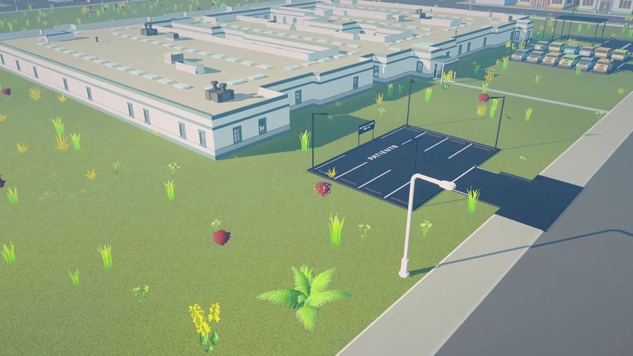
0.9.205Unlimited money mode
New difficulty: same wages and patients, but cash never runs out. Try every stage without saving up.
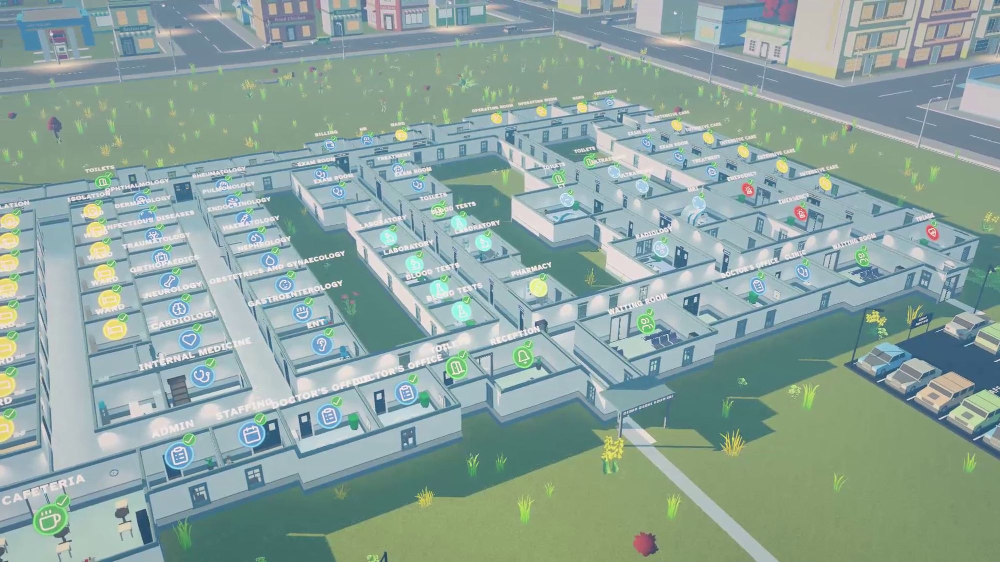
Grow a small urgent care into a world-renowned medical center. Here is what is in the game now, what we are building, and where it goes next.
Playable on Steam Playtest today

0.9.205New difficulty: same wages and patients, but cash never runs out. Try every stage without saving up.
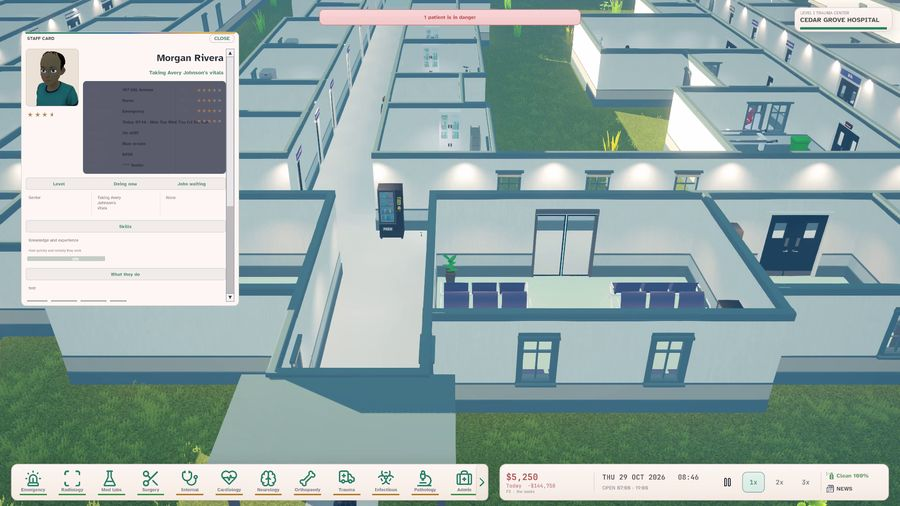
0.9.204Every doctor, nurse and patient rebuilt with lifelike faces and expressions.
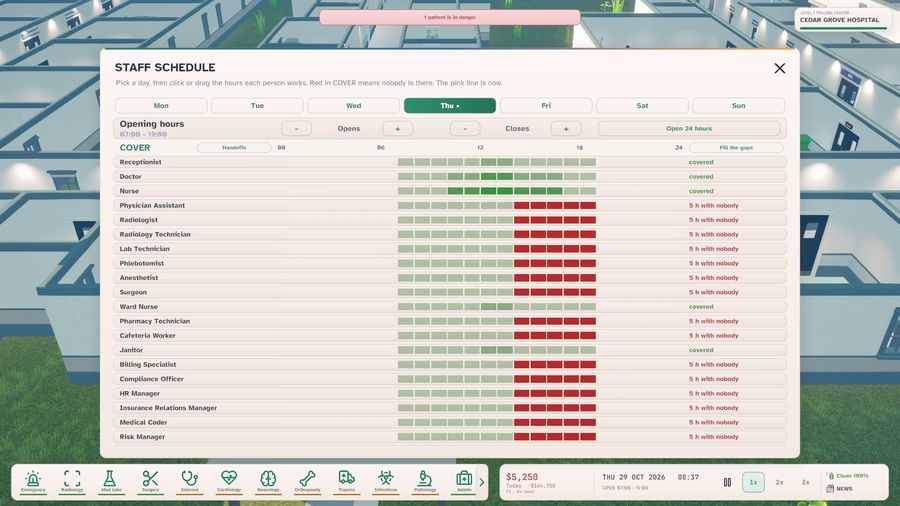
0.9.202Hire by advert and wage, plan weekly shifts, pay the payroll, keep the books.
An autopsy room for unexplained deaths, and every key can be rebound in Settings.
Coming in the next updates
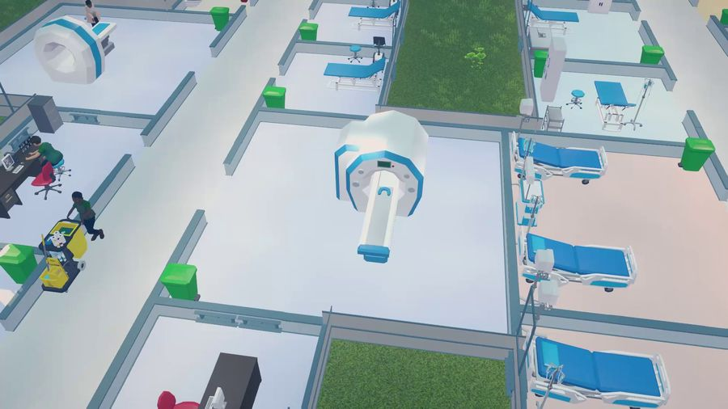
Next updateA doctor who reads every X-ray, CT, MRI and ultrasound. Opens at Small Clinic.
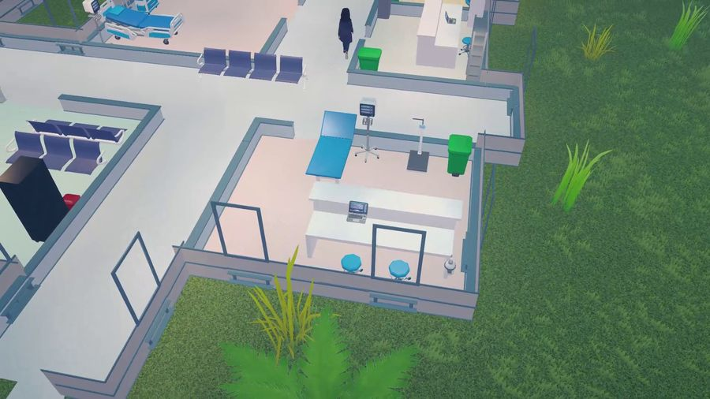
In progressEvery patient who walks in leaves: home, to another hospital, or to the morgue.
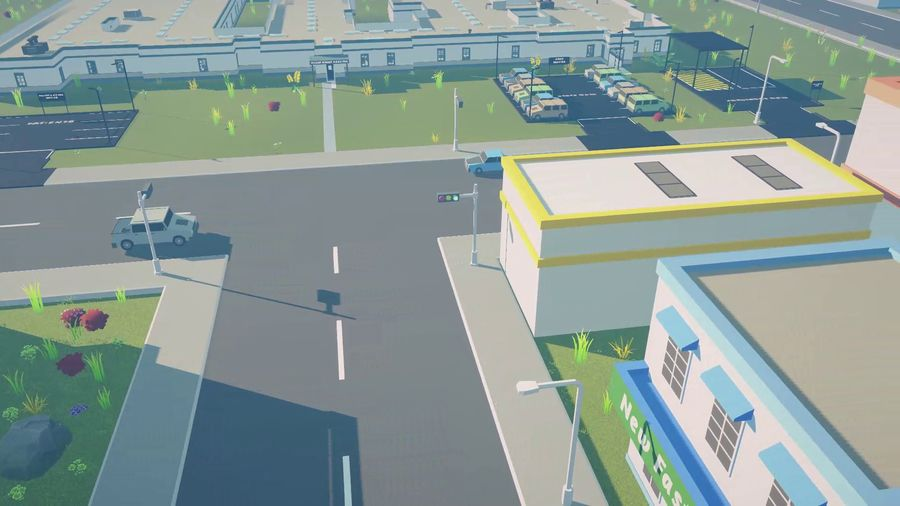
In progressAiming for 120 frames a second on strong PCs. First step shipped in 0.9.205.
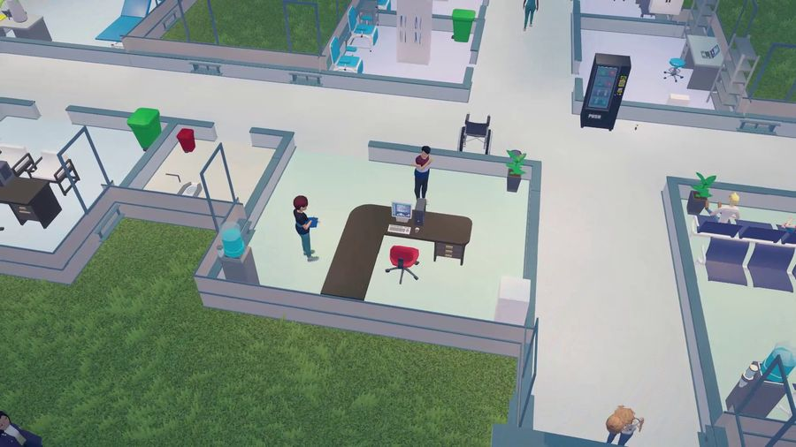
In progressYour first ten minutes show you how to play, no Discord needed.
Demo target: December 2026
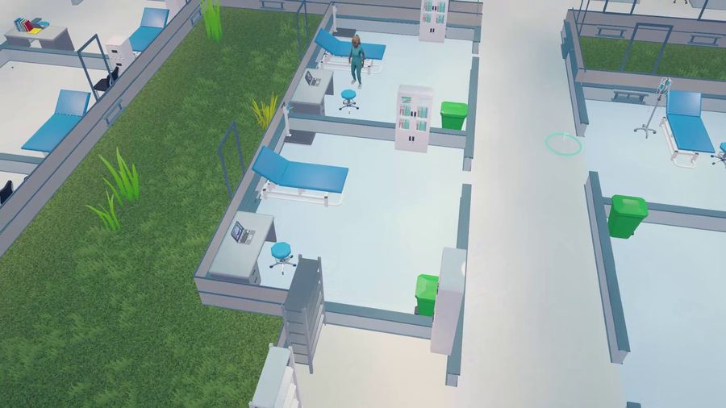
Dec 2026One hospital, 20 to 30 polished minutes: build a clinic, admit patients, watch your staff work.
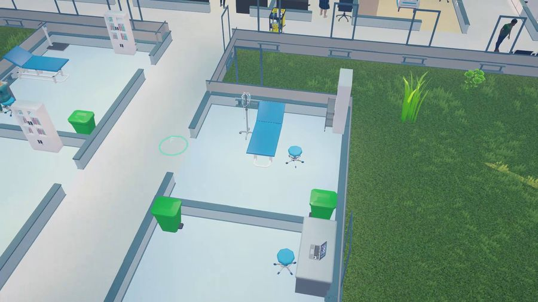
BetaDoctors who choose well on their own, staff who stay where you post them, urgent patients first.
After the demo
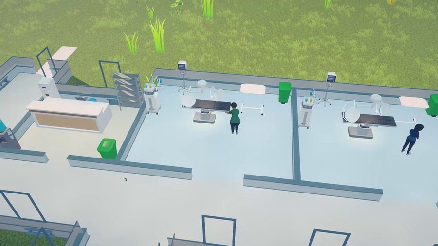
PlannedScrubs, white coats and gowns for the whole cast.
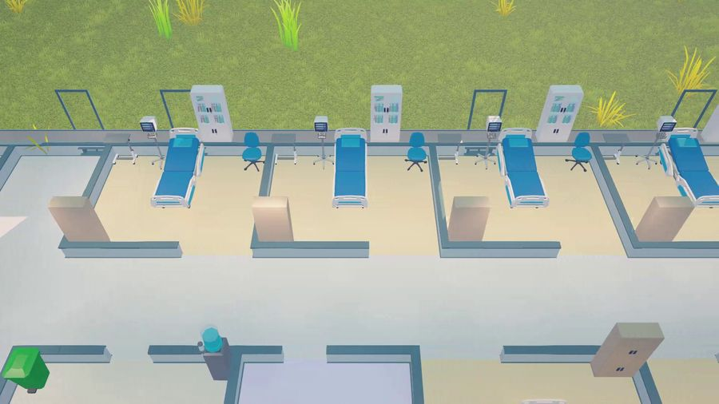
PlannedInfants brought in by their parents, and patients of every age.
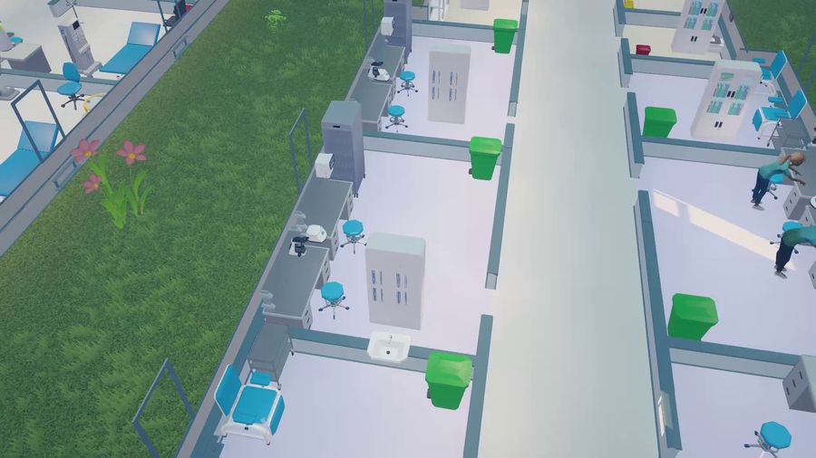
PlannedEach with its own tests and treatment, and a medical library to match.
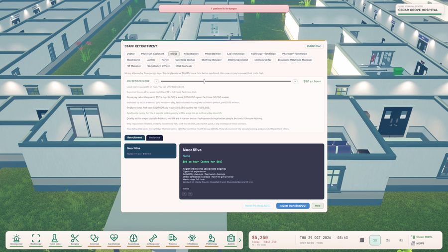
PlannedTraining paths, burnout, and staff who grow with your hospital.
Insurance denials to appeal, uninsured walk-ins, and a "sickest first" switch for each department.
Every hospital starts as an urgent care. Meet a stage's goals, ask for an inspection, and the next stage opens new rooms and new staff.
Reception, triage, exam rooms, blood tests
You start hereX-ray, ultrasound, pharmacy, cafeteria
Emergency department, wards, 12 specialties
Surgery, ICU, CT, cardiology
MRI, isolation, trauma care
Autopsy and on-call rooms
Three specialty departments ready
Every specialty, 4.5 stars, 100 staff
Want to see every stage fast? Start a new game on Unlimited money. You still meet each stage's goals to move up.
This week alone, five tester reports were fixed in a single update. The more you tell us, the faster it gets better.
Press F8 in game. Write one sentence. The report sends itself with your save and log.
Join the Discord. Ideas and questions welcome: discord.gg/wJsszncrF6